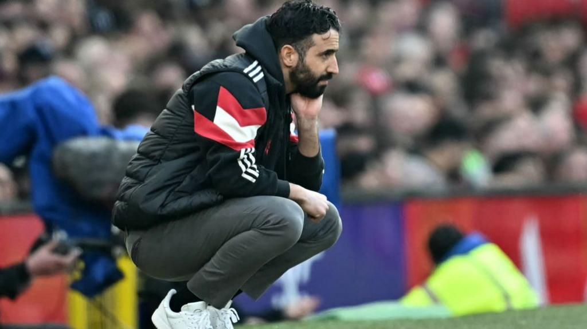
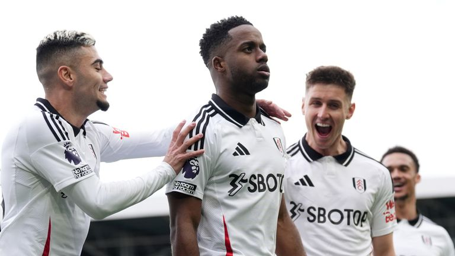

Champions League build-up and European news conferences
Ratcliffe "blunt and honest", and "everyone is underperforming" says Amorim in Man Utd news conference. Read More
Fulham 2-0 Tottenham: Ryan Sessegnon scores against old club after Rodrigo Muniz opener as Marco Silva's side go eighth
Ryan Sessegnon struck a stunner against his former club as Fulham boosted their hopes of European qualification with a 2-0 win over toothless Tottenham at Craven Cottage to move up to eighth in the Premier League. Read More
UEFA Nations League 2024: POR vs SCO, SUI vs ESP live time and streaming

The UEFA Nations League 2024 has been witnessing several match-winning goals, with fans enjoying every moment. As another matchday approaches, record-breaking goalscorer Cristiano Ronaldo is set to take the stage once again as Portugal face Scotland on September 8. Read More